Estimativa de Preços [ Voltar ]Utilize este formulário para definir produtos para os quais se deseja uma cotação de preços. O formulário "Estimativa de Preços" encontra-se dentro do menu "Compras". 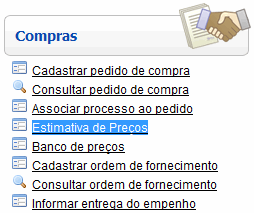
Ao clicar no nome do formulário, o sistema exibirá a seguinte tela:
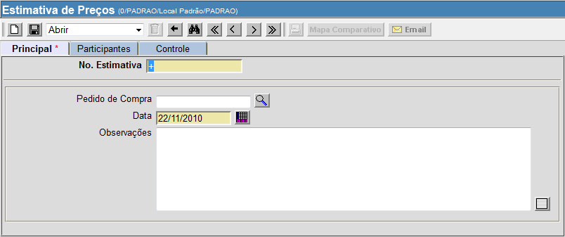
Para criar uma estimativa de preços, siga os passos abaixo: 1º
Passo: insira, se for o caso, o número do pedido de compra.
Se você quiser associar uma estimativa de preços à um pedido de compra
existente, clique no botão
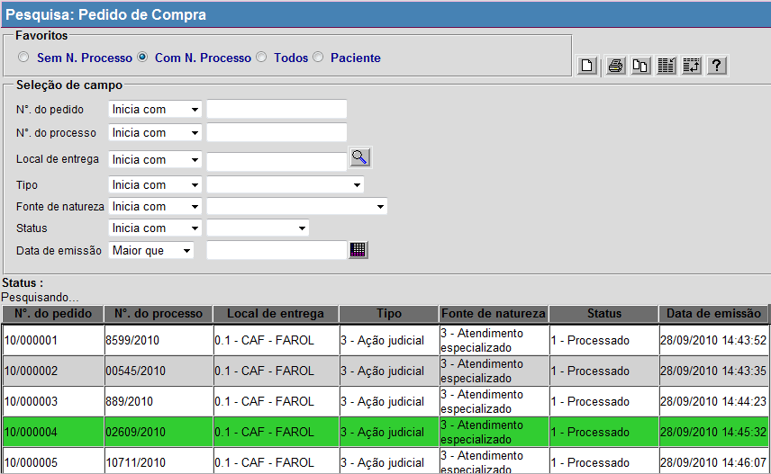
Após clicar no pedido
desejado, a janela de pesquisa será fechada automáticamente. Para
continuar, clique no botão Alternativa caso não seja
necessário associar a estimativa de preços à um pedido de compra
existente:
Se você desejar criar uma estimativa de preços do zero, sem ter que
associá-la a um pedido de compra, simplesmente insira as observações
necessárias no campo "Observações" (o qual é opcional) e clique no botão 2º
Passo: insira os produtos desejados. Assim que o registro é salvo,
uma grade para inclusão dos produtos da estimativa será exibida na
parte inferior do formulário. Clique no botão
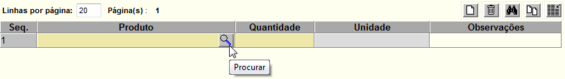
Após selecionar o produto,
informe a quantidade necessária para a estimativa. Se desejar inserir
outros produtos, clique no botão
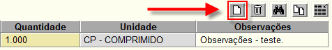
Passo opcional: é possível cadastrar os participantes da estimativa de preços, clicando na aba "Participantes". Observação: esta ação ainda não associará as estimativas de preço aos fornecedores, simplesmente irá inserir os fornecedores escolhidos em uma lista a partir da qual você poderá escolher posteriormente os que desejar.
Após clicar nesta aba, será mostrada a seguinte página:
Na parte de baixo do formulário é mostrada uma lista de fornecedores sugeridos pelo sistema para o(s) produto(s) selecionado(s).
O sistema gera a lista de sugestões com as empresas que:
É possível inserir manualmente os códigos dos
participantes
desejados na grade ou, de uma maneira mais simples, apenas clicar nas
caixas de seleção dos fornecedores desejados (ver imagem abaixo).
Observação: nos dois casos, para confirmar a seleção é necessário
clicar em
Observação: caso você
queira inserir TODOS os fornecedores sugeridos na lista de
participantes, selecione a opção "Utilizar todos acima",
disponível no final do formulário, e depois clique em
Depois de salvar, a lista de participantes será atualizada com os fornecedores escolhidos. Clique na aba "Principal" para continuar.
Passo opcional: após ter cadastrado os participantes, você tem a possibilidade de convocá-los para a estimativa, tanto por fax quanto por email. Para solicitar a cotação por fax, clique no botão Para enviar a solicitação de cotação por email, clique
no botão
Quando os campos estiverem preenchidos adequadamente,
clique em Observação: O sistema só envia e-mail para os fornecedores que possuem um endereço de e-mail cadastrado no Cadastro de Fornecedores.
3º Passo: seleção das propostas. Após ter recebido dos fornecedores as cotações dos produtos, é necessário cadastrá-las do sistema para poder gerar o mapa comparativo. Na aba "Principal", observe que abaixo da grade com os materiais é mostrada uma tabela. Nesta tabela são mostradas as propostas para cada produto (observe que na coluna "No. de Propostas" não há nenhuma proposta cadastrada). Observação: para a elaboração da estimativa de preços, é necessário que exista pelo menos uma proposta de preços para cada produto.
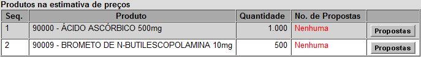
Após clicar no botão
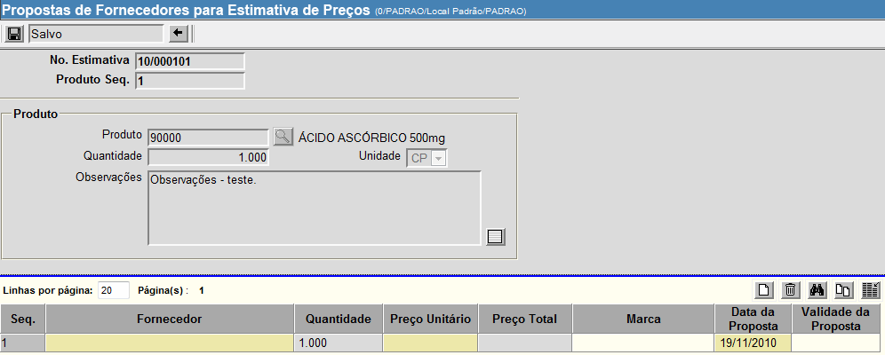
4º
Passo: insira as propostas.
Na grade devem ser inseridas as propostas dos fornecedores para o
produto selecionado. Após inserir o código do fornecedor desejado
(manualmente ou usando o botão de pesquisa), clique em Observação: se você cadastrou anteriormente os fornecedores participantes da estimativa, estes serão mostrados em uma tabela na parte inferior do formulário.
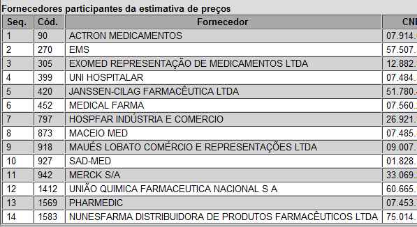
Ao clicar nos nomes dos fornecedores desejados, estes irão sendo colocados na grade automáticamente. Observe que os fornecedores já selecionados são mostrados em cinza.
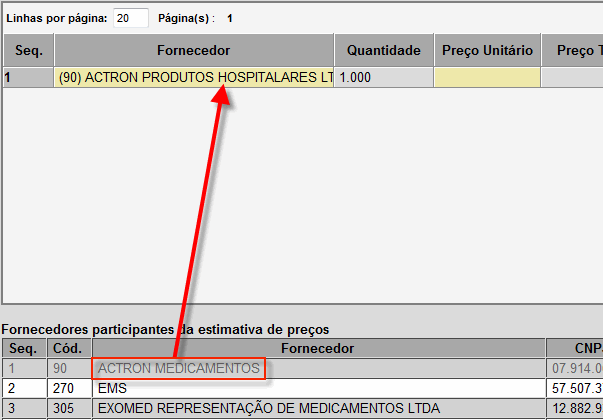
Depois de inserir os
fornecedores, clique em
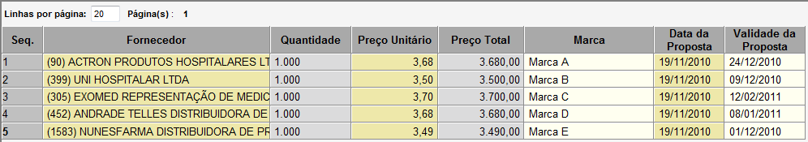
Observação: existem várias maneiras de preencher os campos de data. Uma é simplesmente escrevendo a data no formato DD/MM/AAAA (dia, mês e ano). Outra maneira é clicando no botão [Data] para selecionar em um calendário a data desejada. Uma terceira forma é seguindo uma das seguintes instruções:
Depois de selecionar
todos os fornecedores desejados, clique no botão
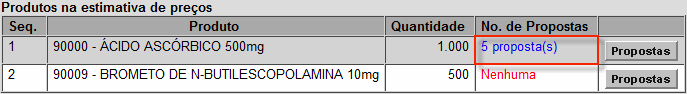
Se for necessário cadastrar as propostas de outros produtos na estimativa de preços (como é no caso no exemplo acima), repita os passos do 4º passo. 5º Passo. Depois de
cadastrar as propostas dos fornecedores e salvar, o botão |

 [Imprimir] da barra
de ferramentas para visualizar a tela de impressão do pedido de
cotação. Par
[Imprimir] da barra
de ferramentas para visualizar a tela de impressão do pedido de
cotação. Par [Imprimir] do navegador.
[Imprimir] do navegador.